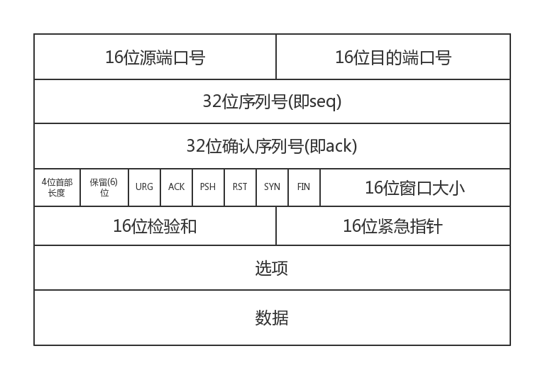

传输层基础知识
关于传输层的基础知识
传输层作用
传输层向应用层提供通信服务，是面向通信部分的最高层，也是用户功能中的最低层。传输层位于网络层之上，为运行在不同主机上的进程之间提供了逻辑通信，而网络层提供了主机之间的逻辑通信，即使网络层协议会使分组丢失、混乱和重复，传输层同样也能为应用程序提供可靠的服务。
应用进程之间的通信被称为端到端的逻辑通信。逻辑通信： 传输层之间的通信好像是沿水平方向传递数据，但事实上这两个传输层之间并没有一条水平方向的物理连接。
传输层有复用与分用的功能。 复用是指发送方不同的应用进程都可以使用同一个传输层协议传送数据，分用是指接收方的传输层在剥去报文的首部后能把这些数据正确交付到目的的应用进程。
传输层还可以对收到的报文进行差错检测(首部和数据部分)。
传输层提供两种不同的传输协议，即面向连接的TCP 和无连接的UDP。面向连接的服务是在通信双方进行通信之前，必须先建立连接。在通信过程中，整个连接的情况一直被实时的监控和管理。当通信结束后，应释放这个连接。而无连接的服务，两个实体之间的通信不需要先建立好连接，需要通信的时候，直接将信息发送到网络中，让该信息的传递在网上尽力而为地往目的地传送。
传输层的寻址与端口
端口能够让应用层的各种应用进程将其数据通过端口向下交付给传输层，以及让传输层知道应当将其报文段中数据向上通过端口交付给应用层相应的进程。端口就是传输层服务访问点TSAP,它在传输层的作用类似于IP地址在网络层的作用或MAC地址在数据链路层的作用，只不过IP地址和MAC地址标识的是主机，而端口标识的是主机中的应用程序。
应用进程通过端口号进行标识，端口号长度为16bit,能够表示 2^16 个不同的端口号。端口号具有本地意义。
在网路中通过使用IP地址来标识和区别不同的主机，通过端口号来标识和区分一台主机中的不同的应用进程。在网络中采用发送方与接收方的套接字组合来识别端点。 套接字 =(主机IP地址，端口号)唯一的标识了网络中一个主机和其上的一个进程。
TCP
TCP协议的特点
TCP 是面向连接的传输层协议
每一条TCP连接只能有两个端点，每一条TCP连接只能是点对点的(一对一的)
TCP 提供的可靠的交付服务，保证传送的数据无差错、不丢失、不重复且有序。
TCP 提供全双工通信，TCP允许通信双方的应用进程在任何时候都能发送数据，为此TCP连接的两端都设有发送缓存和接收缓存，用来临时存放双向通信数据。
发送缓存用来暂时存放以下数据： 1)发送应用程序传给发送方TCP准备发送的数据 2) TCP已发送但尚未收到确认的数据
接收缓存用来暂时存放以下数据： 1)按序到达的但尚未被接收应用程序读取的数据 2) 不按序到达的数据TCP是面向字节流的，虽然应用程序和TCP的交互是一次一个数据块，但TCP把应用程序交下来的数据看成仅仅是一连串的无结构的字节流
TCP 报文段
TCP传送的数据单元被称为报文段，一个TCP报文段分为TCP首部和TCP数据两部分，整个TCP段作为IP数据报的数据部分封装在IP数据报中，TCP的首部前20字节是固定的。TCP报文段的首部最短是20字节，后面的4N字节是根据需要增加的选项。TCP报文段既可以用来运载数据，也可以用来建立连接、释放连接和应答。

主要字段的意义：
序号字段： TCP 是面向字节流的。TCP连接中传送的数据流中的每一个字节都编上一个序号。序号字段的值是指的是本报文段所发送的数据的第一个字节的序号
确认号字段： 是期望收到对方的下一个报文段的数据的第一个字节的序号。
确认位ACK: 只有当确认位ACK = 1 时确认号字段才有效，当ACK =0 时，确认号无效。 TCP中规定： 在连接建立后所有的报文段都必须将ACK 置为1
同步位SYN：同步位 SYN=1 表示这是一个连接请求或连接接收报文。 当SYN=1,ACK=0时，表明这是一个连接请求报文，对方若同意建立连接，则在响应报文中使用SYN=1,ACK=1
终止位FIN: 用来释放一个连接。FIN=1 表明此报文段的发送方的数据已发送完毕，并要求释放传输连接。
TCP 三次握手
TCP连接的建立采用客户端/服务器的方式。主动发起连接建立的应用进程叫做客户机，而被动等待连接建立的应用进程叫做服务器

(1) 客户机的TCP首先向服务器的TCP发送一个连接请求报文段，这个特殊的报文段中不含应用层数据，其首部的SYN标志位被置为1。另外，客户机会随机选择一个起始序号seq=x（连接请求报文不携带数据，但要消耗掉一个序号）
(2) 服务器的TCP收到连接请求报文段后，如同意建立连接，就向客户机发回确认，并为该TCP连接分配TCP缓存和变量。在确认报文段中，SYN和ACK位都被置为1，确认号字段的值为x+1,并且服务器随机产生起始序号 seq = y (确认报文不携带数据，但也要消耗一个序号)。 确认报文段同样不包含应用层数据。
(3) 当客户机收到确认报文段后，还要向服务器给出确认，并且也要给该链接分配缓存和变量。这个报文段的ACK标志位被置为1，序号段为x+1,确认号字段为ack = y+1,该报文段可以携带数据，如果不携带数据则不消耗序列号
服务器端的资源是在完成第二次握手时分配的，而客户端的资源是在完成第三次握手时分配的，这就使得服务器易于受到SYN洪泛攻击
TCP 四次挥手

(1) 客户机打算关闭连接，就向其TCP发送一个连接释放报文段，并停止再发送数据，主动关闭TCP连接，该报文段的FIN标志位被置为1，seq=u,它等于前面已传送过的数据的最后一个字节的序号加1（FIN 报文段即使不携带数据，也要消耗掉一个序号）。TCP 是全双工的，即可以想象成一条TCP 连接上有两条数据通路。当发送FIN报文时，发送FIN 的一端就不能再发送数据，也就是关闭了其中一种数据通路，但对方还可以发送数据
(2) 服务器收到连接释放报文段后即发出确认，确认号是ack=u+1,而这个报文段自己的序号是v,等于它前面已传送过得数据的最后一个字节的序号+1。此时，从客户机到服务器这个方向的连接就释放了，TCP处于瓣关闭状态，但服务器若要发送数据，客户机仍要接收。
(3) 若服务器已经没有要向客户机发送的数据，就通知TCP释放连接，此时其发出FIN=1的连接释放报文段
(4) 客户机收到连接释放报文段后，必须发出确认。在确认报文段中，ACK字段被置为1，确认号ack=w+1,序号 seq=U+1,此时TCP连接还没有释放掉，必须经过时间等待计时器设置的时间2MSL后，A才进入到连接关闭状态。
TCP可靠传输
TCP提供的可靠数据传输服务就是要保证接收方进程从缓存区读出的字节流与发送方发出的字节流是完全一样的。TCP使用校验、序号、确认和重传机制来实现可靠传输
序号
TCP 首部的序号字段指的是本报文段所发送的数据的第一个字节的序号。
确认
TCP首部的确认号是期望收到对方的下一个报文段的数据的第一个字节的序号。 TCP 默认使用
累计确认，即TCP只确认数据流中至第一个丢失字节为止的字节。重传： 超时和冗余ACK
1) 超时： TCP 每发送一个报文段，就对这个报文段设置一次计时器，只要计时器设置的重传时间到期但是还没有收到确认，就重传这一报文段。
2）冗余ACK: 超时触发重传存在的一个问题就是超时周期往往太长，幸运的是，发送方通常可在超时事件发生之前通过注意冗余ACK来较好的检测丢包情况。 冗余ACK就是再次确认某个报文段的ACK，而发送方之前已经收到过该报文段的确认。TCP 规定每当比期望序号大的失序报文段到达时，发送一个冗余ACK，指明下一个期待字节的序号。 TCP规定当发送方收到对同一个报文段的3个冗余ACK时，就可以认为跟在这个被确认报文段之后的报文段已经丢失。然后就可以对这个报文段进行重传，这也被称为
快速重传
TCP流量控制
TCP 提供了流量控制服务以消除发送发使接收方缓存区溢出的可能性。流量控制是一个速度匹配服务。在通信过程中，接收方根据自己接收缓存的大小，动态的调整发送方的发送窗口大小。这就是接收窗口rwnd，即调整TCP报文段首部中的“窗口”字段值，来限制发送方向网络注入报文的速率。 同时，发送发根据其对当前网络拥塞程序的估计而确定的窗口值，称为拥塞窗口cwnd, 发送方发送窗口的大小是取rwnd和cwnd 的最小值
TCP拥塞控制
拥塞控制就是为了防止过多的数据注入网络中，这样可以使网络中的路由器或链路不致过载。拥塞控制与流量控制的区别： 拥塞控制是让网络能够承受现有的网络负荷，它是一个全局性的过程，涉及所有的主机、所有的路由器，以及与降低网络传输性能有关的所有因素。 而流量控制往往是指点对点的通信量的控制，即接收端控制发送端，它所要做的就是抑制发送端发送数据的速率，以便使接收端来得及接收。
为了更好的对传输层进行拥塞控制，主要有四种算法：慢开始、拥塞避免、快重传和快恢复。这四种算法其实也很好理解，也就是俩图的理解。网上又很多解释，不再赘述。。
引用文献
- 《图解TCP/IP》